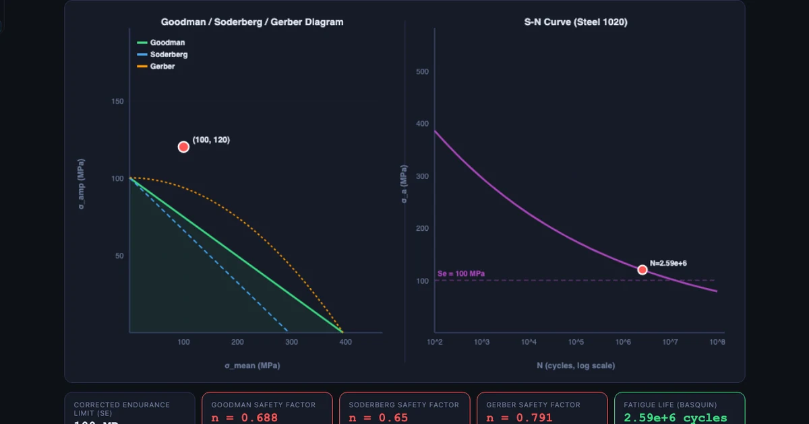
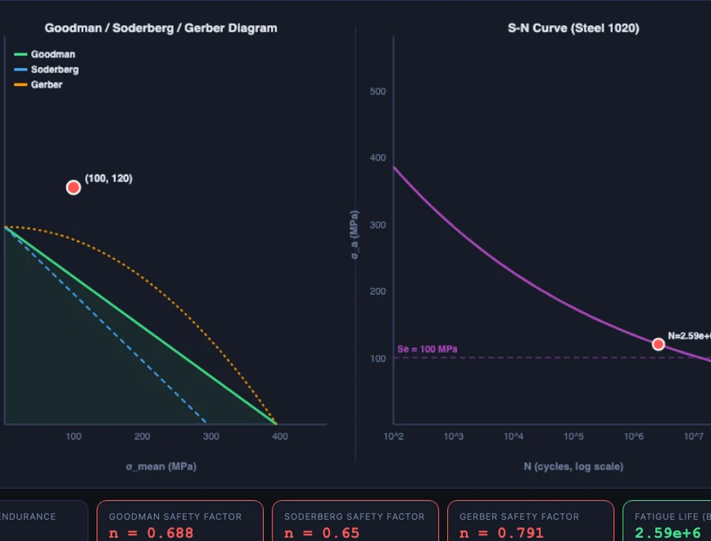

Why Fatigue Failure Surprises Engineering Students — And How I Fixed That

- Fatigue failure happens at cyclic stresses well below the yield point, so it surprises students raised on static failure — the fix is to make it visible with an interactive S-N curve and Goodman diagram rather than whiteboard formulas.
- The S-N curve follows Basquin's equation σ_a = σ'_f (2N)^b (b is negative, roughly −0.07 to −0.12 for steel); steel has a true endurance limit S'_e ≈ 0.5 × S_ut (for S_ut ≤ 1400 MPa) while aluminium alloys do not.
- The Marin equation S_e = k_a·k_b·k_c·k_d·k_e·S'_e derates the lab endurance limit to real parts, and Goodman, Soderberg, and Gerber criteria then account for mean stress — together they can cut allowable stress by a factor of two or three.
Static failure is intuitive. Apply enough force to a bar of steel and it yields, then fractures. Every student understands the logic: too much stress, something breaks. Textbooks teach it first because it’s the simplest story to tell.
Fatigue failure is a different kind of surprise entirely. A crankshaft spins through millions of cycles at a stress well below the yield point. Weeks pass. Then it snaps — suddenly, with no warning, at a stress that wouldn’t dent a static specimen. Students hear this and don’t quite believe it. The numbers don’t match their mental model. The material didn’t “fail” by the rules they learned.
That disconnect is exactly where I used to lose them. The theory is correct; the intuition just hasn’t been built yet. And drawing S-N curves on a whiteboard doesn’t build it. You need to work the numbers across several materials, adjust the parameters, and see the life estimate change in real time. That’s what the Fatigue Life Simulator does — and this article walks through how I use it across a full fatigue unit.
The Problem With Teaching Fatigue From Textbooks
Here’s the core difficulty: fatigue is a statistical, microscopic, progressive phenomenon being described by macroscopic engineering equations. The gap between “a crack is nucleating at a grain boundary” and “σa/Se + σm/Sut = 1/n” is enormous, and most introductory courses skip over it.
What students end up with is a set of formulas they can apply but not picture. They know there’s a “fatigue limit” and they know steels have one while aluminium doesn’t, but they can’t tell you why the S-N curve bends flat at 106 cycles for steel and keeps dropping for aluminium alloys. They know Goodman is “the one you use” but not how it differs from Soderberg, and why anyone would choose Gerber instead.
The other problem is numbers. Fatigue is a log-log world — a change from 105 to 106 cycles sounds small but represents a tenfold increase in life. Students raised on linear graphs struggle to read S-N curves correctly. They interpolate linearly where they should be working in log space. A fatigue life calculator that plots in real log-log scale, with a live operating point they can drag, fixes that reading problem in a single session.
Understanding the S-N Curve: Basquin’s Equation Made Visible
The S-N curve (also called a Wöhler curve) plots stress amplitude σa against number of cycles to failure N on a log-log scale. The underlying relationship is Basquin’s equation:
\[\sigma_a = \sigma'_f \left(2N\right)^b\]
where σ′f is the fatigue strength coefficient (related to the true fracture strength) and b is the fatigue strength exponent — negative, because stress amplitude must decrease as life increases. For most steels, b sits between −0.07 and −0.12. Flatter b means the material retains fatigue strength well; steeper b means life drops quickly as stress rises.
For Steel 4140 (Sut = 1020 MPa), the Shigley data gives σ′f = 1580 MPa and b = −0.085. At N = 106 cycles that works out to:
\[\sigma_a = 1580 \times \left(2 \times 10^6\right)^{-0.085} = 437 \text{ MPa}\]
That’s the stress amplitude at which you’d expect one million cycles. The true endurance limit for ferrous materials is defined at 106–107 cycles (Shigley uses 106 for high-strength steels). Below Se′, infinite life is assumed. The standard estimate for steels with Sut ≤ 1400 MPa is:
\[S'_e = 0.5 \times S_{ut} \quad (\text{for } S_{ut} \leq 1400 \text{ MPa})\]
For Steel 1020 (Sut = 395 MPa), that gives Se′ = 197.5 MPa. Simple. But for Al 6061-T6 (Sut = 310 MPa) there’s no horizontal knee in the S-N curve at all. Aluminium and most non-ferrous alloys don’t have a true endurance limit — the curve keeps descending. A finite design life (typically 5 × 108 cycles) is chosen instead. Showing students both curves on the same plot, side-by-side, instantly communicates why aluminium aircraft components need careful life tracking while steel springs can be designed for infinite life.
To solve for life at a given stress amplitude, you invert Basquin’s equation:
\[N = \dfrac{1}{2}\left(\dfrac{\sigma_a}{\sigma'_f}\right)^{1/b}\]
The 1/b exponent is large and negative (for b = −0.085, it’s roughly −11.8). That’s why fatigue life is so sensitive to stress amplitude. A 10% increase in σa doesn’t reduce life by 10% — it can cut it in half.
Marin Factors: Why Your Lab Sample and Your Real Part Behave Differently
The endurance limit Se′ is measured in a controlled lab environment on a polished, 7.5 mm rotating-beam specimen at room temperature with 50% reliability. Your actual part is none of those things. It’s bigger, machined with a real surface finish, operating at a real temperature, with stress concentrations at every shoulder and keyway. That’s where the Marin equation comes in:
\[S_e = k_a \cdot k_b \cdot k_c \cdot k_d \cdot k_e \cdot S'_e\]
Each factor accounts for one way the real part differs from the test specimen. Let’s take Steel 4140 (Sut = 1020 MPa) through all five:
ka — Surface finish. The Marin surface factor for a machined surface on 1020 MPa steel is ka = 4.51 × 1020−0.265 ≈ 0.82. A ground surface gives ka closer to 0.93; a forged surface can be as low as 0.57. Surface finish is usually the biggest single derating factor because fatigue cracks initiate at surface irregularities.
kb — Size. Larger parts have a higher probability of containing a critical flaw in the highly stressed volume. For a solid 40 mm shaft, kb ≈ 0.85. For a 10 mm shaft, kb = 1.0.
kc — Reliability. At 50% reliability, kc = 1.0. At 99% reliability, kc = 0.814. At 99.9%, kc = 0.753. Most engineering designs use 90% (kc = 0.897) or 99%.
kd — Temperature. At room temperature, kd = 1.0. For elevated-temperature applications above 450°C, fatigue strength drops and kd < 1.0. This matters for exhaust components, turbine parts, and anything near a combustion chamber.
ke — Stress concentration. This is often the most severe factor. ke = 1/Kf, where Kf = 1 + q(Kt − 1). Kt is the theoretical geometric stress concentration factor; q is the notch sensitivity of the material (0 to 1, higher for stronger materials). A sharp shoulder fillet on a 4140 shaft might give Kt = 2.5 and q ≈ 0.95, so Kf ≈ 2.43 and ke ≈ 0.41. That alone cuts the endurance limit by more than half.
Students consistently underestimate how much these factors stack. Running through a worked example on the simulator — watching Se drop from 510 MPa to something around 180 MPa after all five corrections — lands harder than any table in a textbook.

The Goodman Diagram: When Mean Stress Gets Involved
Up to this point, all the analysis assumes fully-reversed loading — a stress cycle that swings equally between tension and compression, with zero mean stress. Real components almost never load that cleanly. A rotating shaft in bending comes close, but add a press-fit hub, a preloaded bolt, or a residual stress from heat treatment, and you have a non-zero mean stress σm sitting on top of the alternating amplitude σa.
Mean stress changes everything. Tensile mean stress accelerates crack propagation and shortens fatigue life. The Goodman diagram captures this with a failure line across the σm–σa plane. The modified Goodman criterion is:
\[\dfrac{\sigma_a}{S_e} + \dfrac{\sigma_m}{S_{ut}} = \dfrac{1}{n}\]
where n is the safety factor. For a crankshaft bearing journal with σa = 150 MPa, σm = 50 MPa, Se = 217 MPa (corrected), and Sut = 1020 MPa:
\[n = \left(\dfrac{150}{217} + \dfrac{50}{1020}\right)^{-1} \approx 1.35\]
A safety factor of 1.35 against the Goodman line. Whether that’s acceptable depends on the consequences of failure. For an aircraft component you’d want n ≥ 1.5 minimum; for a general industrial part, 1.2–1.5 is often acceptable.
The three criteria differ in how they draw that failure boundary:
- Goodman — linear from (0, Se) to (Sut, 0). The standard for industry. Conservative enough for most steels, straightforward to apply.
- Soderberg — linear from (0, Se) to (Sy, 0). More conservative because Sy < Sut. Guarantees that yielding won’t occur before fatigue failure. Use this where plastic deformation is completely unacceptable.
- Gerber — parabolic: (σm/Sut)² term. Fits experimental ductile-steel data most accurately but is unconservative at high mean stress. Useful for academic comparison; less common in design codes.
The body image above shows all three plotted simultaneously for the crankshaft scenario. The operating point (150, 50) sits inside the Goodman boundary (safe) with n ≈ 1.35, well inside Soderberg (safer), and comfortably inside Gerber. Seeing the three lines around a single point immediately communicates how much the choice of criterion shifts the apparent safety margin — without requiring a single additional word of explanation.
How I Structure the Fatigue Unit in My Class
I’ve tried several orderings over the years and landed on a four-stage progression that maps directly to the simulator’s features.
Stage 1: S-N curve first, formulas second. Before any equations, students open the simulator and select two materials — I usually start with Steel 4140 and Al 6061-T6. They look at the curves and I ask three questions: Which material would you choose for a part that spins a billion times? Which one drops in strength faster? What’s the stress amplitude at 106 cycles for each? They work out the answers from the graph. Then I introduce Basquin’s equation as the formula that describes the curve they’ve already seen. The formula lands completely differently when you’ve seen the curve first.
Stage 2: Marin factors as a checklist. I give students a scenario — a machined 4140 crankshaft, 40 mm diameter, 99% reliability, operating at room temperature, with a fillet Kt = 1.8. They work through ka through ke one by one, entering each factor into the simulator as they go and watching Se drop. By the end, the corrected endurance limit is usually around 170–190 MPa instead of the raw 510 MPa. That factor-of-three reduction is a genuine shock to most students.
Stage 3: Goodman diagram for design problems. Once they have Se corrected, the Goodman diagram becomes a design check. I give a loading scenario (alternating and mean stress from a combined bending-torsion case using the Shaft Torsion Simulator), and they plot the operating point, read off the safety factor, and decide if it’s acceptable. Then I ask: what if we wanted n = 2? How would you redesign?
Stage 4: Design project. Students choose a rotating component (shaft, crankshaft, connecting rod, axle) and do a full fatigue analysis: material selection, Marin correction, loading analysis, Goodman check. They have to defend their material choice and show that the safety factor is appropriate for the application. The simulator is their calculation tool throughout; the report explains the engineering decisions. It’s the one assessment task where students consistently say they understood what they were doing while they were doing it — not in retrospect.
For more on combining bending and torsion before a fatigue check, the shaft torsion formula guide covers the polar moment of inertia and shear stress distribution in detail. And for the material side of things, the stress-strain curve guide explains where Sut and Sy come from in the first place.
Try It Yourself
All tools below are free — no account, no download. Open them on any device.
Key Takeaways
- Fatigue failure occurs at stresses well below yield — the defining counterintuitive fact that needs to be shown visually, not just stated.
- Basquin’s equation \(\sigma_a = \sigma'_f (2N)^b\) describes the S-N curve; the steep negative exponent b explains why a small stress increase dramatically shortens life.
- Steel has a true endurance limit Se′ = 0.5 × Sut (for Sut ≤ 1400 MPa); aluminium alloys do not — they need a finite design life.
- The Marin equation corrects Se′ to real-world conditions. Surface finish (ka) and stress concentration (ke) are typically the largest derating factors, and they stack multiplicatively.
- Goodman is the standard industrial mean-stress criterion. Soderberg is more conservative (uses Sy); Gerber fits experimental data best but is less safe at high mean stress.
- Teaching S-N → Marin → Goodman as a three-stage sequence — with the simulator as the calculation engine — gives students a complete fatigue analysis workflow they can apply to any rotating component.
Frequently Asked Questions
What is an S-N curve and how is it used in fatigue analysis?
An S-N curve (Wöhler curve) plots stress amplitude against cycles to failure on a log-log scale. It follows Basquin’s equation: σa = σ′f (2N)b, where σ′f is the fatigue strength coefficient and b is the fatigue strength exponent (negative, typically −0.07 to −0.12). Steel has a true endurance limit Se′ below which infinite life is assumed; aluminium alloys do not. Reading the S-N curve gives an estimated life at any given stress amplitude.
What are the Marin correction factors and why do they matter?
Marin factors adjust the laboratory endurance limit (measured on a polished rotating-beam specimen) to real-world conditions: ka for surface finish, kb for part size, kc for reliability, kd for temperature, and ke for stress concentration via Kf = 1 + q(Kt − 1). Without these corrections, an analysis using raw Se′ can overestimate life by a factor of two or more.
What is the difference between Goodman, Soderberg, and Gerber criteria?
All three account for mean stress effects. Goodman uses a linear relationship (σa/Se + σm/Sut = 1/n) and is the standard industrial choice. Soderberg is more conservative, replacing Sut with the yield strength Sy, guaranteeing no yielding. Gerber uses a parabolic relationship with (σm/Sut)², which fits experimental data best for ductile materials but offers less safety margin at high mean stress. The Fatigue Life Simulator plots all three simultaneously.
How does stress concentration affect fatigue life?
Fatigue cracks initiate at stress concentrations — notches, holes, keyways, and shoulder fillets. The fatigue stress concentration factor Kf = 1 + q(Kt − 1), where Kt is the theoretical factor and q is the notch sensitivity (0 to 1). High-strength steels have q near 1, making them more notch-sensitive than lower-strength steels. The ke Marin factor = 1/Kf directly reduces the corrected endurance limit, so a sharp notch on a 4140 shaft can cut the allowable amplitude stress by 40% or more.
Does the simulator follow Shigley’s method?
Yes. The fatigue model uses Shigley’s Mechanical Engineering Design approach throughout: Basquin’s equation for the S-N curve, the Marin equation (Se = ka·kb·kc·kd·ke·Se′) for the corrected endurance limit, and the modified Goodman, Soderberg, and Gerber lines for mean-stress interaction. The Kf calculation follows the Neuber method for notch sensitivity. Materials data (σ′f, b, Sy, Sut) match Shigley’s Appendix A tables.
Fatigue failure doesn’t feel fair. The stress is low, the material looks fine, and then one cycle too many and it’s done. Once students understand why — crack nucleation, propagation, and the log-log mathematics of the S-N curve — the surprise turns into respect for the analysis. They stop trusting static yield criteria for cyclic problems and start asking the right questions: What’s the surface finish? What’s the notch geometry? What’s the mean stress?
The Fatigue Life Simulator is free and needs no account. Work through Steel 1020, Steel 4140, and Al 6061-T6 in sequence, apply the Marin factors one at a time, and plot an operating point on the Goodman diagram. The whole analysis takes about 20 minutes. It’ll change how your students think about every rotating part they ever design.